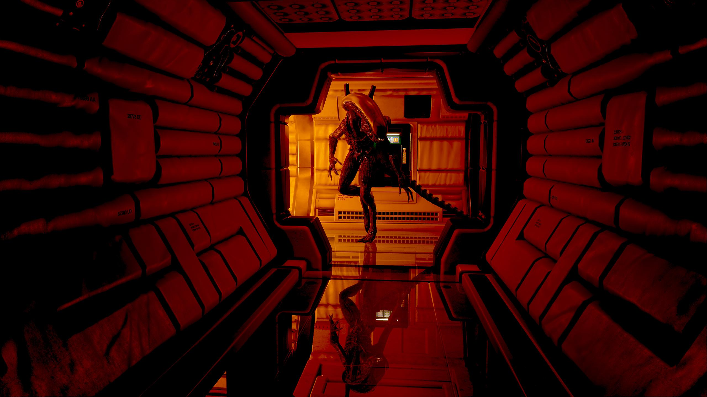
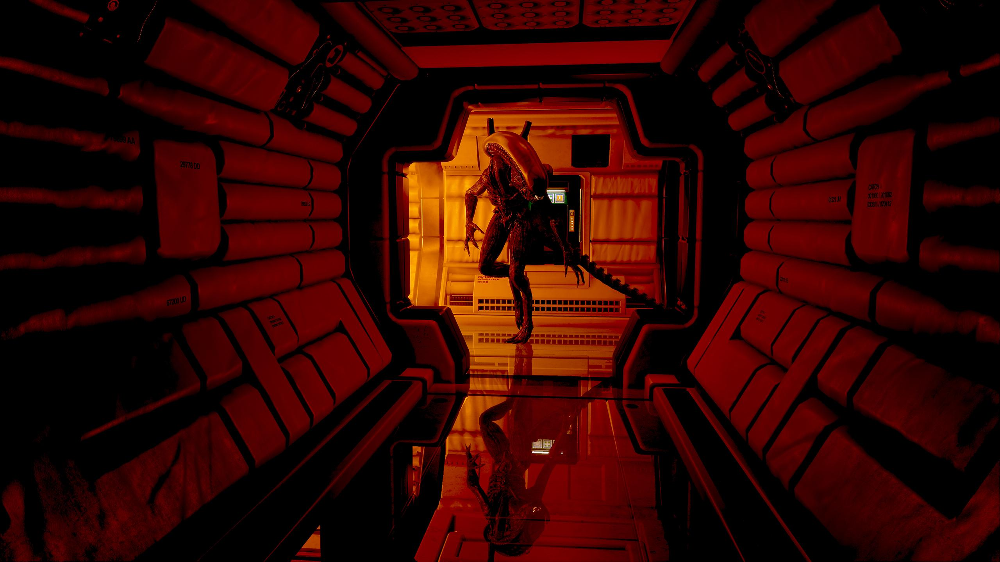
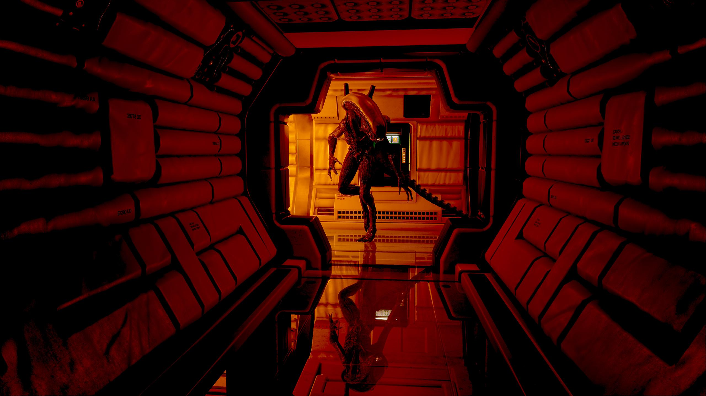

CLASSIFIED

 

The year is 2137, and you will be playing as Amanda Ripley in search of her mother. At the beginning of the game, a human-like robot, which are known as synthetics, named Christopher Samuels, reveals information that is bound to help her, with her search. The flight-recorder unit of the Nostromo, the ship her mother worked on before it disappeared, has been located aboard the Sevastopol space station. Amanda is assigned to retrieve this unit, along with Samuels and a crew-member, named Nina Taylor. They arrive at the Sevastopol, to find the space station damaged, followed by an explosion that separates Amanda from her team. As Amanda tries to find her way back to her friends, she will encounter a different type of synthetic, named Working Joe’s, paranoid and terrified passengers and of course… the Alien.
additional content
As the the title of this section entails, you will die a lot in this game, but in my opinion that’s its only major downside. Everything from the characters, to the environments and the A.I. of the Xenomorph is incredible and will keep the player hooked until the very end. I have never played a game that has captured my full attention, making me stop in my tracks to hear if there’s something behind me and decide whether or not to run away. I have also never been more terrified while playing a video game. Hearing the screams from passengers aboard the station, or the screeches from the Alien, always makes the hair stand up on the back of my neck. This game requires a lot of exploring, which allows for the player to take in the beautiful scenery, both of space and the interior design of the station. Unfortunately, there are a few more problems to the game on top of the constant lack of immersion due to frequent deaths. It is very repetitive, making the player explore, hide, kill, and solve puzzles that are almost exactly the same over and over again. The save system in this game is also very annoying. Rather than being given a “save button” to be used at your disposal, or having the game automatically save for you, this game contains a very limited amount of “saving stations”, which you will have to find and go through a 30 second long process to save your game. That is if you make it to the station without dying. Finally, this is a very long game that contains a story that I did not enjoy as much as the movies (excluding Alien 3 and Alien: Resurrection). In conclusion, if you are a fan of the films and want to take a Xenomorph head on, or are a fan of action/thriller games that require exploring beautiful environments and are filled with interesting characters, then this is the game for you. It is also important to note that this game is best played at night and that there are graphic scenes in this game, which are not recommended for children under 17 years old.
